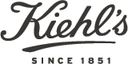
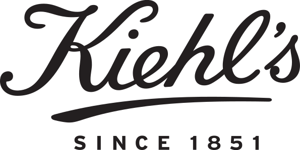

키엘 KIEHL’S
키엘(Kiehl's)은 1851년 미국 뉴욕에서 약방으로 출발한 스킨케어 브랜드다. 옛 약제상(apothecary) 헤리티지를 바탕으로 한 미니멀한 제품으로 알려졌으며, 2000년 로레알이 인수했다.
최종 업데이트
키엘은 어떤 브랜드인가
키엘(Kiehl's)은 1851년 미국 뉴욕에서 약방으로 출발한 스킨케어 브랜드다. 옛 약제상(apothecary) 헤리티지를 바탕으로 한 미니멀한 제품으로 알려졌으며, 2000년 로레알이 인수했다.
키엘은 어떻게 봐야 할까
키엘은 약방 헤리티지와 성분 중심 커뮤니케이션으로 신뢰를 쌓은 로레알 산하 스킨케어 브랜드다. 헤리티지, 핵심 제품, 모회사 구조를 함께 보면 뷰티·퍼스널케어 안에서의 위치가 또렷해진다.
키엘은 어떻게 시작되고 성장했나
키엘은 1851년 뉴욕에서 조제약국으로 시작하였다. 1924년 존 키엘이 브룬스윅 약국을 매입하고 키엘 약국으로 개명했다.
이후 허브 연구가였던 존 키엘의 수제자 어빙 모스(Irving Morse)가 본격적으로 약국 제품에 키엘 로고를 붙여 판매하면서 화장품 브랜드가 되었다. 키엘은 내추럴 성분을 바탕으로 피부 자극을 최소화 한 제품들을 선보이고 있다.
키엘의 브랜드 아이덴티티는 무엇인가
키엘의 핵심 브랜드 전략은 정직한 제품 생산과 함께 기업 이윤을 사회에 환원함으로써 올곧은 이념을 실천하는 것이다. 로고와 패키지는 심플하게 디자인하고, 제품 생산과 사회 공헌 활동에 집중함으로써 핵심 가치를 전략적으로 실현하고 있다.
키엘의 대표 제품과 서비스는 무엇인가
페이스·바디·헤어 스킨케어를 전개한다. Ultra Facial Cream, 카렌듈라 토너, Midnight Recovery 오일 등이 대표 제품이다.
키엘은 누가 만들고 이끌었나
존 키엘(John Kiehl)이 약국을 인수하며 브랜드명이 됐다.
키엘은 지금 어떤 상태인가
더 알아둘 것
미국 뉴욕 이스트빌리지에서 약방으로 출발했으며 2000년 로레알이 인수했다.
키엘 연혁 — 주요 사건은 언제였나
키엘 로고는 어떻게 변해왔나

BI/CI 아카이브보관 이미지 1
BI/CI 아카이브 2보관 이미지 2자주 묻는 질문
키엘는 언제 설립되었나요?
키엘는 1851년 설립되었습니다.
키엘의 브랜드 아이덴티티는 무엇인가요?
키엘의 핵심 브랜드 전략은 정직한 제품 생산과 함께 기업 이윤을 사회에 환원함으로써 올곧은 이념을 실천하는 것이다.
키엘의 대표 제품은 무엇인가요?
페이스·바디·헤어 스킨케어를 전개한다.
키엘는 현재 어떤 상태인가요?
국가: 미국; 본사: 뉴욕(New York); 산업: 뷰티·퍼스널케어
키엘의 본사는 어디에 있나요?
키엘의 본사는 Third Avenue에 있습니다(위키데이터 기준).
키엘의 모기업은 어디인가요?
키엘의 모기업은 로레알입니다(위키데이터 기준).
키엘의 공식 웹사이트는 어디인가요?
키엘의 공식 웹사이트는 https://www.kiehls.com 입니다.
출처와 검증
키엘 관련 참고: 공식 웹사이트 · 위키데이터 Q3196447 · 한국어 위키백과 · 영어 위키백과. 브랜드명은 한글과 원어를 함께 표기하되 데이터에 없는 표기는 만들지 않습니다. 기원 국가·설립연도는 검수된 정의문에서 확인된 값을 우선하고, 없을 때만 공식 웹사이트 URL이 일치하는 위키데이터 개체의 값을 씁니다. 위키데이터 값은 2026-09-07 기준입니다.